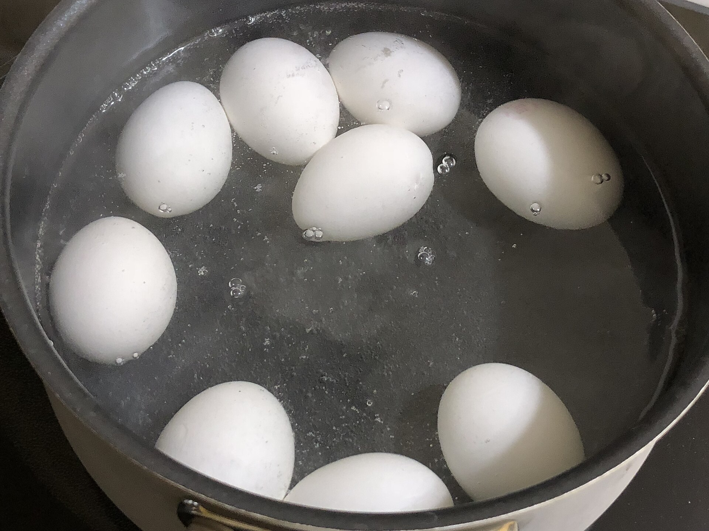

高山上的水滾了，為什麼蛋反而煮更久？
同樣一鍋咕嚕作響的水，為什麼無法照搬平地的計時？從鍋裡的壓力，到蛋黃裡還沒完成的反應。
山屋裡的一鍋水已經大滾，蛋也照平地的習慣煮過幾分鐘。剝開卻發現，中心仍比預期柔軟。很容易把問題歸給爐火不夠旺，於是再轉大一點；可是，若鍋裡的水本來就在持續沸騰，更旺的火究竟能改變什麼？這不是只查一張沸點表就能回答的問題。從水變成蒸氣，到熱穿過蛋殼，再到蛋白質形成網絡，至少有三個過程接連發生。高山改變了第一個條件，後面兩個過程就不能照原來的時鐘走。

一、先問鍋裡的泡泡在證明什麼
沸騰時，液體內部形成的蒸氣泡能夠長大，而不會立刻被周圍壓力壓回去。水的飽和蒸氣壓會隨溫度上升；當它足以對抗外界壓力，水便能持續沸騰。海拔升高、氣壓降低，需要達到的溫度也跟著下降。「水滾了」其實同時在報告溫度與壓力，只是平地生活常讓我們忘記後一項。
美國國家家庭食品保存中心刊載的 USDA 換算表列出：海拔 2,000 英尺（約 610 公尺），水約在 97.8°C 沸騰；6,000 英尺（約 1,830 公尺）約為 93.9°C；10,000 英尺（約 3,050 公尺）約為 90°C[2]。這是高度與沸點關係的實用表，不是任何山屋、任何天氣的現場測量；真正作用的變數是氣壓，高度只是方便使用的線索。
因此，更猛烈的翻滾不等於把這鍋開口沸水變回 100°C。持續投入的能量有一部分用於水的汽化。這也不表示大小火完全沒有差別：爐火仍須補足鍋具散熱、維持沸騰；只是「讓水不要冷掉」和「提高當地沸點」是不同的事。
二、水熱了，中心還沒跟上
把冷蛋放入熱水，水溫不是蛋心的溫度。熱先到達外層，經蛋殼、蛋白再往蛋黃傳，內外之間一直存在溫差。你撈起蛋的那一刻，切面不是某個單一溫度的固體，而是一段還在演變的熱歷史。
英國艾希特大學物理學者 Charles D. H. Williams 曾用熱擴散方程建立煮蛋模型：先把蛋簡化成均勻的球，設定水溫、蛋的起始溫度及質量，再估算蛋黃邊界到達指定溫度的時間[5]。模型的例子裡，同一顆約 57 公克的蛋，從 4°C 冰箱取出或從 21°C 室溫開始，估算時間就不同。這是理想化算例，不是建議把生蛋放到室溫的食品安全指令；它要揭示的是，蛋在下鍋前已經帶著一個不能忽略的條件。
模型也說明，大小不能只當成重量標籤看。較大的蛋，熱必須走過更長的路。高山的沸水溫度降低後，蛋與周圍熱水的溫差也變小，同一個中心狀態便需要更多時間。爐火、蛋的大小、起始溫度與鍋裡水量混在一起，正是「每上升多少公尺，一律多煮幾秒」不容易成為萬用規則的原因。
三、凝固不是跨過一條線就完成
若只說「蛋白在六十幾度凝固」，仍會留下疑問：高山上的水明明有 90°C，為什麼還會差這麼多？因為這個溫度範圍不是一個瞬間完成反應的開關。蛋內含有不同蛋白質；加熱使它們原有的摺疊結構改變，再彼此連結，逐漸形成抓住水分的網絡。
美國蛋品協會的技術資料列出蛋白約 62.2 至 65°C、蛋黃約 65 至 70°C 的凝固範圍，但同一頁也提醒：全蛋有四十多種蛋白質，溫度、酸鹼值及配方等因素會改變變性與凝固速率[3]。因此，開始變稠、形成柔軟凝膠、變成你熟悉的硬煮蛋白，不能全部用同一個數字代替。
Williams 自己也指出，將凝固當成到達固定溫度就完成，會低估高海拔煮蛋增加的時間。凝固涉及隨溫度改變速率的反應：熱傳得比較慢，反應在較低溫下也進行得比較慢。前者是熱如何抵達，後者是抵達之後發生什麼。把兩個過程拆開，才明白「90°C 高於凝固範圍」和「需要延長烹調」為何並不矛盾。
四、一顆蛋，其實需要兩種不同的火候
蛋黃與蛋白也不是同一種材料。想要凝固而不橡皮般的蛋白，同時保留柔滑蛋黃，等於要求同一個殼裡的兩個區域經歷不同的溫度與時間。平常靠幾分鐘後起鍋，就是利用外層已熱、中心還沒追上的時間差。
2025 年《Communications Engineering》的一項研究把這件事做成實驗：研究者比較硬煮、半熟、65°C 恆溫及冷熱交替等方式，先模擬蛋內的溫度及凝膠形成，再用光譜、質地及感官分析檢查結果[6]。冷熱交替法讓靠外的蛋白反覆接受較大的溫度變化，蛋黃的變化較平緩。這裡重要的不是照抄一份新奇食譜，而是實驗把「相同一顆蛋，內外可以不同步」這件事顯示出來。
這項研究不是高山試驗，模型也忽略了氣室、自然對流及內部水分移動等因素。它不能替登山者算出一個通用分鐘數，更不能用口感或光譜結果代替病原菌控制的驗證。它支持的較窄結論是：烹調結果取決於整段溫度歷程，不只是水最後有沒有沸騰。
五、調整時間，和改變壓力，是兩條路
科羅拉多州立大學推廣中心提供了比抽象模型更接近廚房的起點：給海拔 5,000 英尺以上的使用者，雞蛋冷水下鍋，水覆過蛋約一英吋；加熱至剛沸騰後轉小火五分鐘，再離火加蓋，大蛋靜置十五分鐘、特大蛋二十分鐘[4]。原指南仍明說，當地使用者需要測試，不能把這個方法當成各高度、各尺寸雞蛋的保證。
另一條路是改變鍋內壓力。壓力鍋的用意正是讓烹調不再受開口鍋的當地沸點限制。但它也不是「用了就完全不受海拔影響」的魔法；操作必須依器具與食譜規範，不能把一般煮蛋經驗移植到壓力罐藏。延長時間是在既有溫度條件下等待；改變壓力是在改動條件本身。兩者都可能有用，卻不是同一個控制旋鈕。
六、口感的問題，到哪裡變成安全問題？
本文解釋的是為什麼相同計時產生不同口感，不是教人憑切面判斷食物已無風險。美國農業部食品安全資料把高海拔烹調、食物中心溫度與罐藏程序分別處理[1]。尤其罐藏的安全依賴經驗證的時間、壓力與配方，不能因為蛋多煮幾分鐘能熟，就推論罐頭也能憑直覺調整。
從這顆蛋可以帶走一個更有用的判讀方式：當某個可見記號被當成完成指令，先問它究竟量到了哪一層。泡泡顯示水正在沸騰，沒有直接量到蛋心；蛋白變白顯示結構已改變，也不等於完成所有食品安全檢驗。高山沒有讓物理定律失效，它只是拆開了在平地經驗裡經常同時出現的幾件事。
查證資料來源6 項
實際支持文中事實主張的來源，逐條標註支持的內容；文內如有 [數字] 標記，對應此處編號。
- High Altitude Cooking（美國農業部食品安全檢驗局 FSIS） ↗
- Temperatures at which Water Boils at Different Elevations（美國國家家庭食品保存中心，喬治亞大學） ↗
- Coagulation/Thickening（美國蛋品協會 American Egg Board） ↗
- High Elevation Hard-Cooked Eggs（科羅拉多州立大學推廣中心，2025 年 10 月檢閱） ↗
- The Science of Boiling an Egg（Charles D. H. Williams，University of Exeter） ↗
- Periodic cooking of eggs（Communications Engineering，2025-02-06） ↗
延伸探討
把故事帶回自己的思考
若要比較平地與山屋的煮蛋時間，你會固定蛋的大小、起始溫度、水量或加熱方式中的哪些條件？又會用中心溫度、切面質地，還是「自己喜歡的口感」當終點？選擇不同終點，得到的答案會有什麼不同？